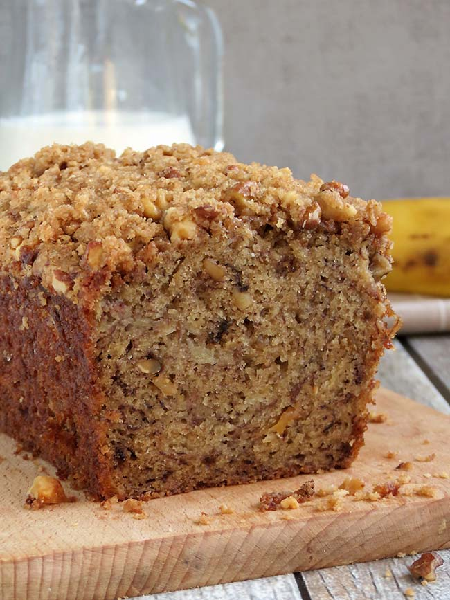

Banana Bread with Streusel Topping

Description
A very moist banana bread with a crunchy streusel topping. Adapted from Yummy Adiction.
Ingredients
- 2 cups all-purpose flour
- 1 tsp baking powder
- 1 tsp baking soda
- 1/2 tsp salt
- 1 tsp ground cinnamon
- a dash of nutmeg
- 1/2 cup unsalted butter, softened
- 3/8 cup brown sugar
- 3/8 granulated sugar
- 2 large eggs, room temperature
- 4 very ripe bananas
- 1/4 cup buttermilk
- 1 tsp vanilla extract
- 1/2 cup walnuts, toasted and chopped
For streusel topping
- 3 tbsp flour
- 1/4 cup brown sugar
- 1/4 tsp cinnamon
- 2 tbsp unsalted butter, slightly softened and cut into pieces
- 1/4 cup chopped walnuts
Directions
- Grease and flour a 9x5 inch loaf pan. Set aside.
- Make streusel topping: Mix flour, brown sugar, and cinnamon in a medium bowl until combined.Cut in the butter until it resembles coarse crumbs. Stir in chopped walnuts. Set aside.
- In a medium bowl, whisk together flour, baking powder, baking soda, salt, cinnamon, and nutmeg. Set aside.
- Cream the butter and sugars in a large mixing bowl until light and fluffy. Add the eggs, one at a time, beating well between each addition. With a wooden spoon, stir in the mashed bananas, buttermilk, and vanilla. Slowly stir in the dry ingredients until just incorporated. Gently stir in walnuts. The batter will be thick.
- Pour the batter into the prepared loaf pan. Sprinkle the streusel topping evenly over the batter. Bake for 1 hour to 1 hour 10 minutes, or until a toothpick inserted into the center of the loaf comes out clean.
- Remove from oven and cool 10-15 minutes in the pan on a wire rack. Remove the bread from the pan and continue to cool on the wire rack. Once fully cooled, wrap and store at room temperature for up to 3 days.
Return to Top
Return to Homepage